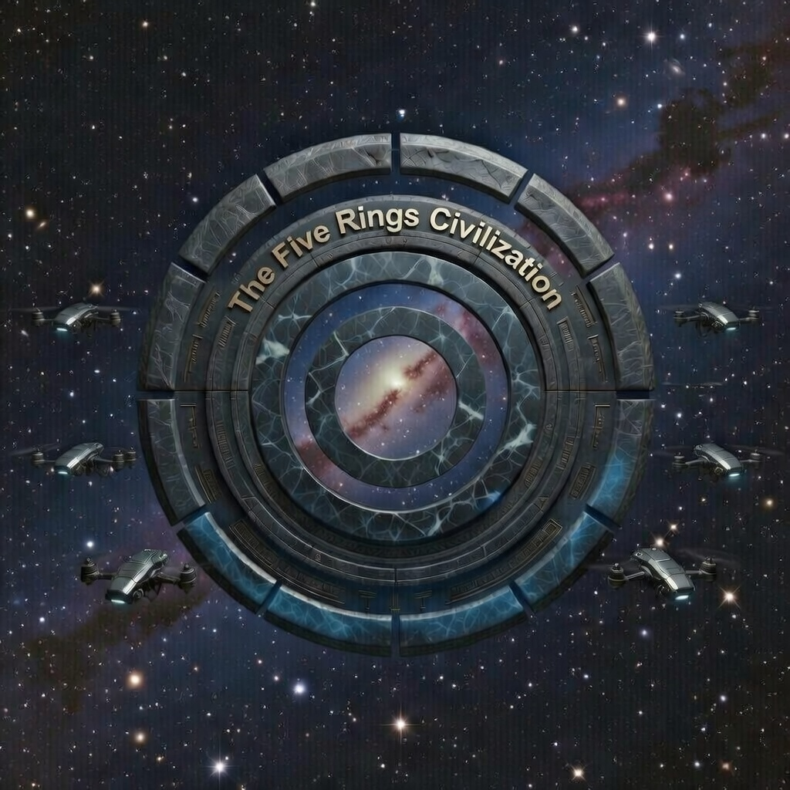

Pillar 01
Freedom with consequence
The system does not abolish human agency. It structures a world where harmful agency carries visible, permanent descent.
A voluntary society of moral causality
The Five Rings is a proposed civilization model built around layered governance, technological accountability, and consequence-bound freedom. Safety, abundance, continuity, and descent are not rhetorical promises here — they are structured outcomes tied to behavior.

Rights, access, and insulation become legible consequences of conduct rather than ideology or inherited status.
Brain implants, backup vessels, audits, and AI mediation make continuity and consequence operational.
Citizens can rise into trust-rich environments or descend into harsher strata based on what they actually do.
The VMSS justice system combines prevention, neural detection, STI accountability, autonomous enforcement, and judicial reassignment into a single civic mechanism.
Violent urges, deliberate violations, or socially harmful acts begin here.
Implant warnings, motor overrides, and voluntary restraint provide a chance to stop escalation.
The act occurs and is registered by the VMSS monitoring infrastructure.
Brain implants, environmental systems, and AR context detect what happened and who was involved.
Social Trust Index adjusts according to severity, pattern, and context. Major violations may enter the public ledger.
The act is severe enough to trigger autonomous state response.
Central authority drones and distributed units respond immediately.
Physical intervention means the subject has already crossed into major violation territory.
The subject is removed from the scene and delivered into the judicial system.
Evidence, telemetry, context, and severity are reviewed within the VMSS legal framework.
Once the process reaches this stage, reassignment is common rather than exceptional.
The point is not just atmosphere. The point is legibility: a reader should quickly understand the moral logic, the rings, and the technologies that enforce the system.
The system does not abolish human agency. It structures a world where harmful agency carries visible, permanent descent.
The upper ring is not utopia by decree. It is an engineered sanctuary reserved for sustained non-harmful conduct.
Backup vessels preserve identity, memory, and civil continuity — not innocence, and not an escape from consequence.
This is the clearest conceptual entry point for new readers. Each layer changes not only material conditions, but also how enforcement, risk, and trust behave.
Read the governing premises and immutable principles first.
See how implants, backups, audits, and walls actually make the model enforceable.
Study practical scenarios and edge cases inside the rings.
See what voluntary entry, implant consent, and early life in Main would look like.
Entry is opt-in. Citizens consent to implants, moral accounting, and the consequences of living inside a system where trust and risk are explicitly stratified.
That framing matters because it distinguishes the project from a coercive state fantasy. The model presents itself as a chosen civilization with transparent rules, not an inescapable dragnet.